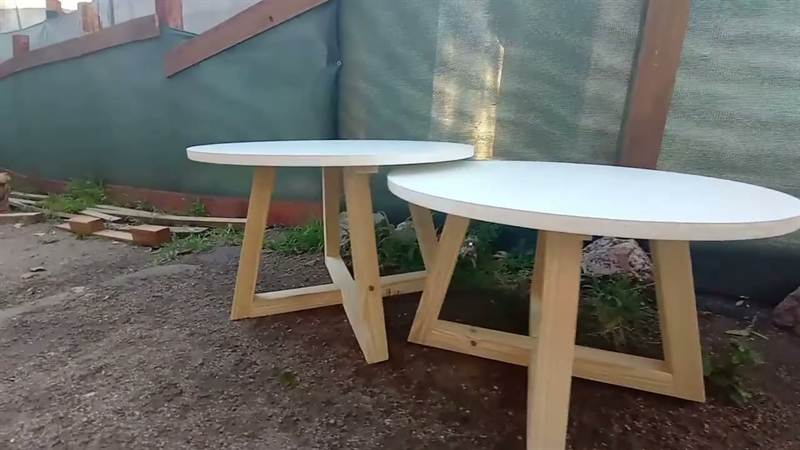

El video de Lenny Montivero con tus medidas: tapa de pino de 80 cm y 3.2 de grueso, 60 de alto, patas a 15°. Corregida el 25 nov: la base es como la del video (la pata llega al piso y la cruz de arriba va acostada). Reproducir pasa solo por los pasos; en pausa giras la mesa con el dedo.

No sale en el video. Sale de la guía del 3 nov, con los tornillos cambiados a lo que hay en La Mundial. La animación es el botón M2 de la barra de pasos.
| Pieza | Cuántas | Medida | Madera | Puntas |
|---|---|---|---|---|
| Tablas de la tapa | 6 | 91 cm | 1 1/2 x 6 | Rectas |
| Patas | 4 | 49.8 cm | 2x4 | Rectas, a 90° |
| Cruz de arriba | 2 | 70 cm | 2x3 | Rectas |
| Cruz baja | 2 | 53.5 cm | 2x4 que sobra, rebajado a 7 cm de alto con la circular | Rectas |
Cruzado con lo que ya compraste (facturas de Larach del 5 y 13 nov y de La Mundial del 13 y 14 nov). Precios de la página de La Mundial el 24 nov a la 1:45 pm, con ISV. La página dice "disponible", pero no dice en qué tienda.
| Qué | Para qué | Precio | Link |
|---|---|---|---|
| Escuadra para carpintero 7" Wadfow WSR1107 (aluminio, triangular, con escala de grados y pivote) | En lugar de la falsa escuadra: es la escuadra que usa Lenny para marcar los 15° y sirve de guía para la circular | L61 | https://lamundial.com/shop/142963-escuadra-para-carpintero-7-wadfow-wsr1107-15098 |
| Tornillo para madera 5 x 70 mm, 100 piezas, Wadfow S5943 | Patas a las cruces: 28 en las 2 mesas (16 en la mesa 1 y 12 en la mesa 2) | L65 | https://lamundial.com/shop/143871-tornillo-para-madera-5x70mm-100pc-wadfow-s5943-16360 |
| Lija para madera 80 Fandeli D081, 4 pliegos (L10 c/u) | Aplanar las tapas y el canto del círculo (no tienes 80) | L40 | https://lamundial.com/shop/46130-lija-para-madera-yeso-d081-80-fandeli-0060-19263 |
| Masking 3/4" x 30 yd Abro | Banderitas de profundidad en las brocas y proteger | L18 | https://lamundial.com/shop/75333-masking-3-4-x30yd-auto-verde-abro-21337 |
| Total de lo que hace falta | L184 |
| Qué | Cuándo | Precio | Link |
|---|---|---|---|
| Pistola Wadfow WGA1506, 600 cc, boquilla 1.4 mm | Solo si no tienes pistola (la lista dice "Después") | L399 | https://lamundial.com/shop/134084-pistola-para-pintar-de-aire-600cc-wadfow-wga1506-15783 |
| Tercer cuarto de barniz Sherwin-Williams | Si barnizas con pistola | L342 | https://lamundial.com/shop/2973-barniz-brillante-para-mueble-1-4-galon-sherwin-williams-6482 |
| Thinner para laca Sherwin-Williams 1.1 L | Solo si quieres el tinte más claro | L81 | https://lamundial.com/shop/44893-thinner-laca-bote-plastico-1-1-litros-sherwin-williams-r7k128-transparente-7397 |
Con la pistola, el tercer barniz y el thinner: L184 + L822 = L1,006.